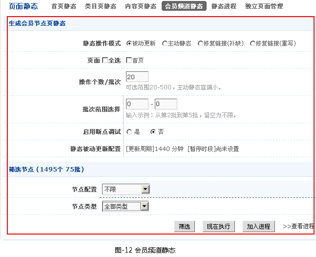
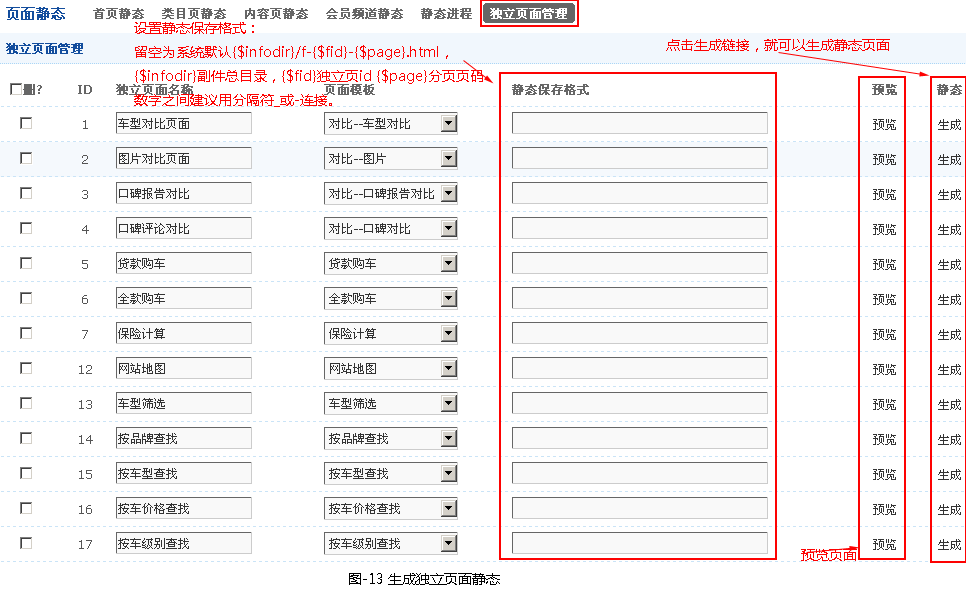

一、会员频道静态设置（如图-11所示）
〖系统设置〗->〖网站参数〗->〖页面设置〗->其它页面设置
二、生成会员频道静态
- 在设置好类目页静态参数时，就可以进行首页静态的生成（〖其他管理〗->〖页面静态〗->〖会员频道静态〗），如图-12所示。

a.〖被动生成静态〗是当用户点击前台页面时，系统自动生成一个该访问静态页面（第一次是动态的，当第二次再点击这个页面时就是静态页面了，以后就会按规则设定的时间自动对已有的静态进行更新;），在网站正常运营期建议使用此设置，系统会自动生成静态页，避免大批量生成静态页面时对服务器资源的消耗。
b.〖主动生成静态〗是管理员主动直接生成前台静态页面; 当网站建设完成，开始正常运营前建议使用一次。一般情况下不建议使用此操作。
c.〖修复静态链接(补缺)〗给[被动生成静态] 生成静态预设静态规则的静态地址，对已先前已生成的静态地址将不在生成，防止以下情况前台生成静态时会出现页面不存在现象。
① 在未启动静态时添加的文章，之后再启动静态。
②静态文件被手动删除。
d.〖修复静态链接(重写) 〗：在以述3的情况下，强制生成所有的预设静态规则的静态地址，发下情况必须用此项。
e.〖加入进程〗：与"立即执行"是静态操作的两种模式，通过加入进程并启动进程，利于长时间的无人值守操作。
三、生成独立页面静态
- 在设置好类目页静态参数时，就可以进行首页静态的生成（〖其他管理〗->〖页面静态〗->〖独立页面管理〗），如图-13所示。

注意点：
※ 独立页在模板中的调用，请在“复合标识”中用“独立页链接”建立标识使用，建立标识时需要提供独立页ID。这样的好处是当该页面在动态和静态之间转换的时候免去修改模板。
※ 静态保存格式：留空为系统默认{$infodir}/f-{$fid}-{$page}.html，{$infodir}副件总目录，{$fid}独立页id {$page}分页页码 数字之间建议用分隔符_或-连接
四、静态页面的小技巧
- ①在测试你设置的静态规则是否正确，在生产静态时 尽可能通过筛选少量数据测试OK后再进行批量静态生成;
②在〖选择页面类型〗选项都勾上，因为可以在模型和节点配置中将某一附加页设成动态
a.节点配置
b.模型中设置